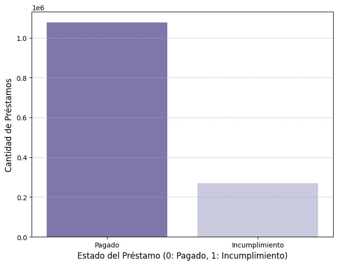
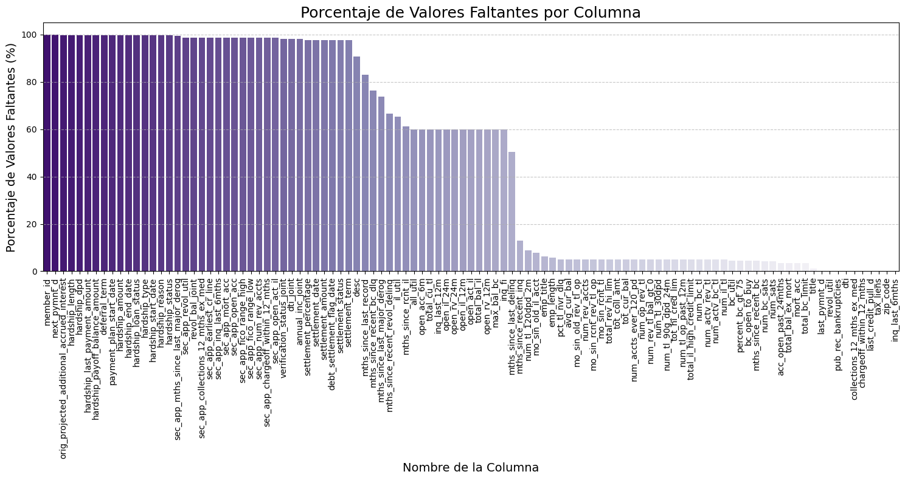
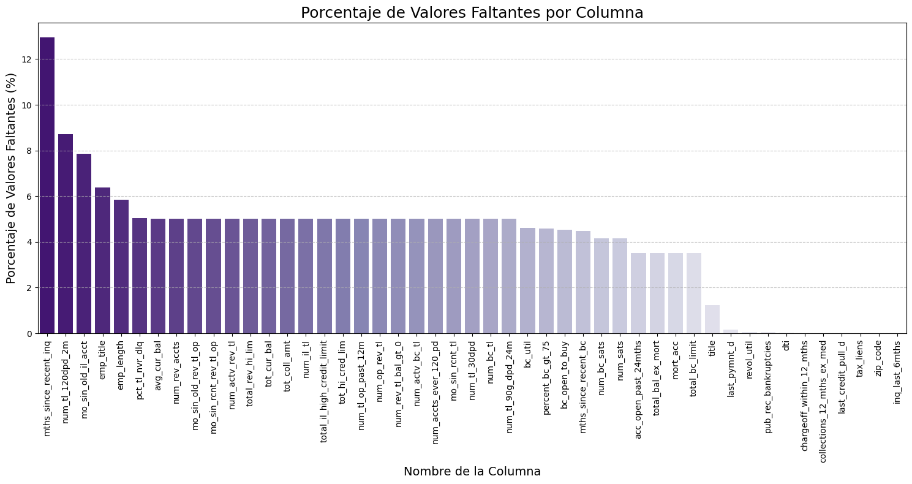
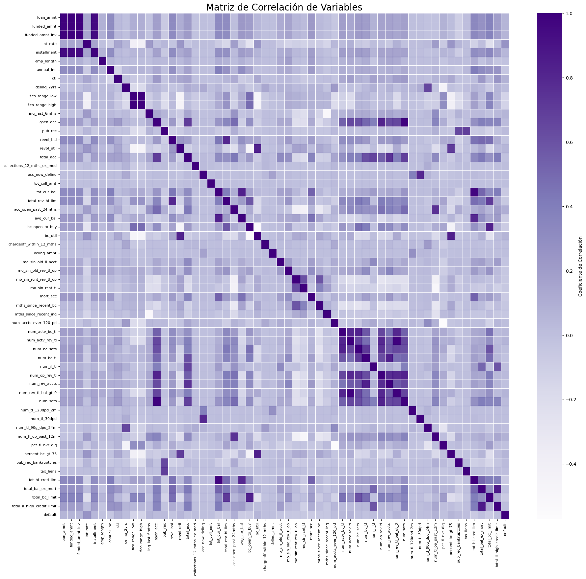
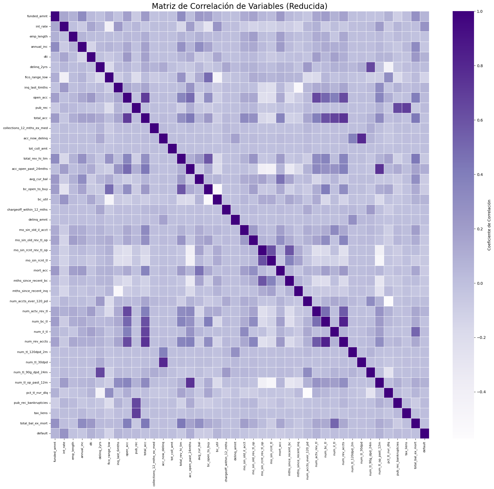
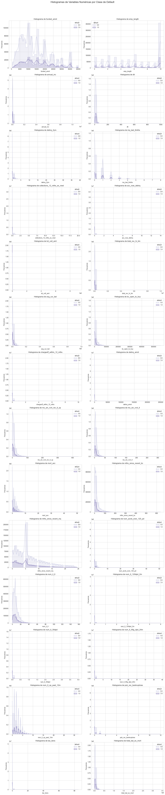
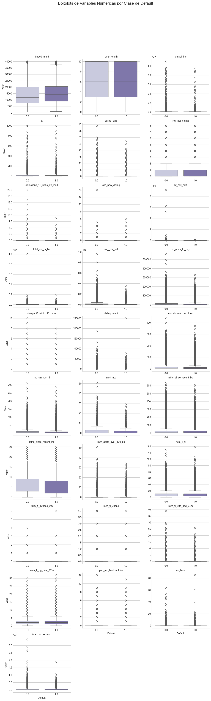

Análisis exploratorio de datos#
Librerías#
import pandas as pd
import numpy as np
import matplotlib.pyplot as plt
import seaborn as sns
from sklearn.impute import SimpleImputer
from scipy.stats import pointbiserialr
from statsmodels.stats.outliers_influence import variance_inflation_factor
Descripción de datos#
df = pd.read_csv("data/accepted_2007_to_2018Q4.csv")
df
C:\Users\David\AppData\Local\Temp\ipykernel_16388\931507168.py:1: DtypeWarning: Columns (0,19,49,59,118,129,130,131,134,135,136,139,145,146,147) have mixed types. Specify dtype option on import or set low_memory=False.
df = pd.read_csv("data/accepted_2007_to_2018Q4.csv")
| id | member_id | loan_amnt | funded_amnt | funded_amnt_inv | term | int_rate | installment | grade | sub_grade | ... | hardship_payoff_balance_amount | hardship_last_payment_amount | disbursement_method | debt_settlement_flag | debt_settlement_flag_date | settlement_status | settlement_date | settlement_amount | settlement_percentage | settlement_term | |
|---|---|---|---|---|---|---|---|---|---|---|---|---|---|---|---|---|---|---|---|---|---|
| 0 | 68407277 | NaN | 3600.0 | 3600.0 | 3600.0 | 36 months | 13.99 | 123.03 | C | C4 | ... | NaN | NaN | Cash | N | NaN | NaN | NaN | NaN | NaN | NaN |
| 1 | 68355089 | NaN | 24700.0 | 24700.0 | 24700.0 | 36 months | 11.99 | 820.28 | C | C1 | ... | NaN | NaN | Cash | N | NaN | NaN | NaN | NaN | NaN | NaN |
| 2 | 68341763 | NaN | 20000.0 | 20000.0 | 20000.0 | 60 months | 10.78 | 432.66 | B | B4 | ... | NaN | NaN | Cash | N | NaN | NaN | NaN | NaN | NaN | NaN |
| 3 | 66310712 | NaN | 35000.0 | 35000.0 | 35000.0 | 60 months | 14.85 | 829.90 | C | C5 | ... | NaN | NaN | Cash | N | NaN | NaN | NaN | NaN | NaN | NaN |
| 4 | 68476807 | NaN | 10400.0 | 10400.0 | 10400.0 | 60 months | 22.45 | 289.91 | F | F1 | ... | NaN | NaN | Cash | N | NaN | NaN | NaN | NaN | NaN | NaN |
| ... | ... | ... | ... | ... | ... | ... | ... | ... | ... | ... | ... | ... | ... | ... | ... | ... | ... | ... | ... | ... | ... |
| 2260696 | 88985880 | NaN | 40000.0 | 40000.0 | 40000.0 | 60 months | 10.49 | 859.56 | B | B3 | ... | NaN | NaN | Cash | N | NaN | NaN | NaN | NaN | NaN | NaN |
| 2260697 | 88224441 | NaN | 24000.0 | 24000.0 | 24000.0 | 60 months | 14.49 | 564.56 | C | C4 | ... | NaN | NaN | Cash | Y | Mar-2019 | ACTIVE | Mar-2019 | 10000.0 | 44.82 | 1.0 |
| 2260698 | 88215728 | NaN | 14000.0 | 14000.0 | 14000.0 | 60 months | 14.49 | 329.33 | C | C4 | ... | NaN | NaN | Cash | N | NaN | NaN | NaN | NaN | NaN | NaN |
| 2260699 | Total amount funded in policy code 1: 1465324575 | NaN | NaN | NaN | NaN | NaN | NaN | NaN | NaN | NaN | ... | NaN | NaN | NaN | NaN | NaN | NaN | NaN | NaN | NaN | NaN |
| 2260700 | Total amount funded in policy code 2: 521953170 | NaN | NaN | NaN | NaN | NaN | NaN | NaN | NaN | NaN | ... | NaN | NaN | NaN | NaN | NaN | NaN | NaN | NaN | NaN | NaN |
2260701 rows × 151 columns
Variables más importantes del estudio#
A continuación, se presenta una descripción resumida de las variables clave a considerar en el análisis, agrupadas por categorías.
Variables del Préstamo y del Cliente#
Estas variables describen los detalles del préstamo y la información básica del solicitante. Son cruciales para evaluar el riesgo.
funded_amnt: Monto del préstamo otorgado. A mayor monto, mayor riesgo potencial.
term: Duración del préstamo. Un plazo más largo aumenta el riesgo.
int_rate: Tasa de interés. Una tasa de interés alta indica mayor riesgo.
installment: El pago mensual. Refleja la carga de la deuda del cliente.
grade y sub_grade: Calificación de riesgo del préstamo. Es la variable más predictiva del conjunto.
annual_inc: Ingresos anuales del prestatario. Los ingresos más bajos pueden indicar mayor riesgo.
emp_length: Años de empleo del prestatario. La estabilidad laboral suele ser un buen indicador.
home_ownership: Propiedad de la vivienda. Un prestatario que posee casa es percibido como menos riesgoso.
purpose: Razón del préstamo. Algunas razones (ej. consolidación de deuda) pueden ser más riesgosas que otras.
dti: Relación deuda-ingreso. Un DTI alto indica que el prestatario está más cargado con deudas.
Variables del Historial Crediticio#
Estas variables provienen del reporte de crédito del prestatario y son vitales para predecir el comportamiento de pago.
fico_range_low y fico_range_high: El rango de puntaje FICO. Un puntaje más alto indica un mejor historial de crédito.
earliest_cr_line: Antigüedad de la primera línea de crédito. Un historial más largo suele ser mejor.
delinq_2yrs: Número de morosidades en los últimos 2 años. Las morosidades son un fuerte predictor de riesgo.
open_acc: Número de cuentas de crédito abiertas. Puede indicar el manejo de crédito.
pub_rec: Número de registros públicos (ej. bancarrotas). La presencia de estos registros es señal de alto riesgo.
revol_bal: Saldo del crédito rotativo. Un saldo alto puede indicar uso excesivo de crédito.
revol_util: Tasa de utilización del crédito rotativo. Un alto uso del crédito disponible es un fuerte indicador de riesgo.
Variables de la Solicitud y Transacción#
Estas variables capturan la actividad reciente del prestatario y el estado de la transacción.
inq_last_6mths: Consultas de crédito en los últimos 6 meses. Múltiples consultas pueden indicar un prestatario desesperado por crédito.
initial_list_status: Estado inicial del préstamo (listado o directo).
disbursement_method: Método de desembolso del préstamo.
Ahora generamos una variable binaria llamada default que servirá como variable objetivo para nuestro modelo de predicción. La variable se basa en la columna original loan_status, la cual contiene distintos estados del préstamo.
#Crear variable binaria
df["default"] = df["loan_status"].apply(lambda x: 1 if x == "Charged Off" else 0)
Para el análisis, solo nos interesa saber si el préstamo fue pagado en su totalidad o cayó en incumplimiento (default).
Transformamos esta información en una variable binaria:
0→ Fully Paid (pagado)1→ Charged Off (incumplimiento)
Luego eliminamos la columna original para evitar duplicidad.
df_filtered = df[df['loan_status'].isin(['Fully Paid', 'Charged Off'])].copy()
df_filtered["default"] = df_filtered["loan_status"].apply(lambda x: 1 if x == "Charged Off" else 0)
df_filtered["default"] = df_filtered["default"].astype('float64')
df_filtered = df_filtered.drop("loan_status", axis=1)
df_filtered
| id | member_id | loan_amnt | funded_amnt | funded_amnt_inv | term | int_rate | installment | grade | sub_grade | ... | hardship_last_payment_amount | disbursement_method | debt_settlement_flag | debt_settlement_flag_date | settlement_status | settlement_date | settlement_amount | settlement_percentage | settlement_term | default | |
|---|---|---|---|---|---|---|---|---|---|---|---|---|---|---|---|---|---|---|---|---|---|
| 0 | 68407277 | NaN | 3600.0 | 3600.0 | 3600.0 | 36 months | 13.99 | 123.03 | C | C4 | ... | NaN | Cash | N | NaN | NaN | NaN | NaN | NaN | NaN | 0.0 |
| 1 | 68355089 | NaN | 24700.0 | 24700.0 | 24700.0 | 36 months | 11.99 | 820.28 | C | C1 | ... | NaN | Cash | N | NaN | NaN | NaN | NaN | NaN | NaN | 0.0 |
| 2 | 68341763 | NaN | 20000.0 | 20000.0 | 20000.0 | 60 months | 10.78 | 432.66 | B | B4 | ... | NaN | Cash | N | NaN | NaN | NaN | NaN | NaN | NaN | 0.0 |
| 4 | 68476807 | NaN | 10400.0 | 10400.0 | 10400.0 | 60 months | 22.45 | 289.91 | F | F1 | ... | NaN | Cash | N | NaN | NaN | NaN | NaN | NaN | NaN | 0.0 |
| 5 | 68426831 | NaN | 11950.0 | 11950.0 | 11950.0 | 36 months | 13.44 | 405.18 | C | C3 | ... | NaN | Cash | N | NaN | NaN | NaN | NaN | NaN | NaN | 0.0 |
| ... | ... | ... | ... | ... | ... | ... | ... | ... | ... | ... | ... | ... | ... | ... | ... | ... | ... | ... | ... | ... | ... |
| 2260688 | 89905081 | NaN | 18000.0 | 18000.0 | 18000.0 | 60 months | 9.49 | 377.95 | B | B2 | ... | NaN | Cash | N | NaN | NaN | NaN | NaN | NaN | NaN | 0.0 |
| 2260690 | 88948836 | NaN | 29400.0 | 29400.0 | 29400.0 | 60 months | 13.99 | 683.94 | C | C3 | ... | NaN | Cash | N | NaN | NaN | NaN | NaN | NaN | NaN | 0.0 |
| 2260691 | 89996426 | NaN | 32000.0 | 32000.0 | 32000.0 | 60 months | 14.49 | 752.74 | C | C4 | ... | NaN | Cash | N | NaN | NaN | NaN | NaN | NaN | NaN | 1.0 |
| 2260692 | 90006534 | NaN | 16000.0 | 16000.0 | 16000.0 | 60 months | 12.79 | 362.34 | C | C1 | ... | NaN | Cash | N | NaN | NaN | NaN | NaN | NaN | NaN | 0.0 |
| 2260697 | 88224441 | NaN | 24000.0 | 24000.0 | 24000.0 | 60 months | 14.49 | 564.56 | C | C4 | ... | NaN | Cash | Y | Mar-2019 | ACTIVE | Mar-2019 | 10000.0 | 44.82 | 1.0 | 1.0 |
1345310 rows × 151 columns
Luego del filtrado de la variable target, se redujo el número de registros de 2,260,701 a 1,345,310.
df_filtered.describe
<bound method NDFrame.describe of id member_id loan_amnt funded_amnt funded_amnt_inv \
0 68407277 NaN 3600.0 3600.0 3600.0
1 68355089 NaN 24700.0 24700.0 24700.0
2 68341763 NaN 20000.0 20000.0 20000.0
4 68476807 NaN 10400.0 10400.0 10400.0
5 68426831 NaN 11950.0 11950.0 11950.0
... ... ... ... ... ...
2260688 89905081 NaN 18000.0 18000.0 18000.0
2260690 88948836 NaN 29400.0 29400.0 29400.0
2260691 89996426 NaN 32000.0 32000.0 32000.0
2260692 90006534 NaN 16000.0 16000.0 16000.0
2260697 88224441 NaN 24000.0 24000.0 24000.0
term int_rate installment grade sub_grade ... \
0 36 months 13.99 123.03 C C4 ...
1 36 months 11.99 820.28 C C1 ...
2 60 months 10.78 432.66 B B4 ...
4 60 months 22.45 289.91 F F1 ...
5 36 months 13.44 405.18 C C3 ...
... ... ... ... ... ... ...
2260688 60 months 9.49 377.95 B B2 ...
2260690 60 months 13.99 683.94 C C3 ...
2260691 60 months 14.49 752.74 C C4 ...
2260692 60 months 12.79 362.34 C C1 ...
2260697 60 months 14.49 564.56 C C4 ...
hardship_last_payment_amount disbursement_method debt_settlement_flag \
0 NaN Cash N
1 NaN Cash N
2 NaN Cash N
4 NaN Cash N
5 NaN Cash N
... ... ... ...
2260688 NaN Cash N
2260690 NaN Cash N
2260691 NaN Cash N
2260692 NaN Cash N
2260697 NaN Cash Y
debt_settlement_flag_date settlement_status settlement_date \
0 NaN NaN NaN
1 NaN NaN NaN
2 NaN NaN NaN
4 NaN NaN NaN
5 NaN NaN NaN
... ... ... ...
2260688 NaN NaN NaN
2260690 NaN NaN NaN
2260691 NaN NaN NaN
2260692 NaN NaN NaN
2260697 Mar-2019 ACTIVE Mar-2019
settlement_amount settlement_percentage settlement_term default
0 NaN NaN NaN 0.0
1 NaN NaN NaN 0.0
2 NaN NaN NaN 0.0
4 NaN NaN NaN 0.0
5 NaN NaN NaN 0.0
... ... ... ... ...
2260688 NaN NaN NaN 0.0
2260690 NaN NaN NaN 0.0
2260691 NaN NaN NaN 1.0
2260692 NaN NaN NaN 0.0
2260697 10000.0 44.82 1.0 1.0
[1345310 rows x 151 columns]>
df_filtered.info
<bound method DataFrame.info of id member_id loan_amnt funded_amnt funded_amnt_inv \
0 68407277 NaN 3600.0 3600.0 3600.0
1 68355089 NaN 24700.0 24700.0 24700.0
2 68341763 NaN 20000.0 20000.0 20000.0
4 68476807 NaN 10400.0 10400.0 10400.0
5 68426831 NaN 11950.0 11950.0 11950.0
... ... ... ... ... ...
2260688 89905081 NaN 18000.0 18000.0 18000.0
2260690 88948836 NaN 29400.0 29400.0 29400.0
2260691 89996426 NaN 32000.0 32000.0 32000.0
2260692 90006534 NaN 16000.0 16000.0 16000.0
2260697 88224441 NaN 24000.0 24000.0 24000.0
term int_rate installment grade sub_grade ... \
0 36 months 13.99 123.03 C C4 ...
1 36 months 11.99 820.28 C C1 ...
2 60 months 10.78 432.66 B B4 ...
4 60 months 22.45 289.91 F F1 ...
5 36 months 13.44 405.18 C C3 ...
... ... ... ... ... ... ...
2260688 60 months 9.49 377.95 B B2 ...
2260690 60 months 13.99 683.94 C C3 ...
2260691 60 months 14.49 752.74 C C4 ...
2260692 60 months 12.79 362.34 C C1 ...
2260697 60 months 14.49 564.56 C C4 ...
hardship_last_payment_amount disbursement_method debt_settlement_flag \
0 NaN Cash N
1 NaN Cash N
2 NaN Cash N
4 NaN Cash N
5 NaN Cash N
... ... ... ...
2260688 NaN Cash N
2260690 NaN Cash N
2260691 NaN Cash N
2260692 NaN Cash N
2260697 NaN Cash Y
debt_settlement_flag_date settlement_status settlement_date \
0 NaN NaN NaN
1 NaN NaN NaN
2 NaN NaN NaN
4 NaN NaN NaN
5 NaN NaN NaN
... ... ... ...
2260688 NaN NaN NaN
2260690 NaN NaN NaN
2260691 NaN NaN NaN
2260692 NaN NaN NaN
2260697 Mar-2019 ACTIVE Mar-2019
settlement_amount settlement_percentage settlement_term default
0 NaN NaN NaN 0.0
1 NaN NaN NaN 0.0
2 NaN NaN NaN 0.0
4 NaN NaN NaN 0.0
5 NaN NaN NaN 0.0
... ... ... ... ...
2260688 NaN NaN NaN 0.0
2260690 NaN NaN NaN 0.0
2260691 NaN NaN NaN 1.0
2260692 NaN NaN NaN 0.0
2260697 10000.0 44.82 1.0 1.0
[1345310 rows x 151 columns]>
Análisis exploratorio#
Variable objetivo: Default#
# Conteo de la variable 'default'
count_table = df_filtered["default"].value_counts().rename_axis('default').reset_index(name='count')
percent_table = df_filtered["default"].value_counts(normalize=True).rename_axis('default').reset_index(name='proportion')
print("\nDistribución de la variable 'default':")
display(count_table.style.background_gradient(cmap='Purples_r', subset=['count']))
print("\nDistribución porcentual:")
display(percent_table.style.background_gradient(cmap='Purples_r', subset=['proportion']))
Distribución de la variable 'default':
| default | count | |
|---|---|---|
| 0 | 0.000000 | 1076751 |
| 1 | 1.000000 | 268559 |
Distribución porcentual:
| default | proportion | |
|---|---|---|
| 0 | 0.000000 | 0.800374 |
| 1 | 1.000000 | 0.199626 |
plt.figure(figsize=(8, 6))
sns.countplot(
x="default",
hue="default",
data=df_filtered,
palette="Purples_r",
legend=False
)
plt.xlabel("Estado del Préstamo (0: Pagado, 1: Incumplimiento)", fontsize=12)
plt.ylabel("Cantidad de Préstamos", fontsize=12)
plt.xticks(ticks=[0, 1], labels=["Pagado", "Incumplimiento"])
plt.grid(axis='y', linestyle='--', alpha=0.7)
plt.show()

La variable objetivo default indica si un préstamo fue impagado. Al analizar su distribución, se observa un desequilibrio significativo:
Clase minoritaria (default = 1.0): representa solo el 19.96% de los datos, es decir, los que tinene un imcumplimiento en sus pagos.
Clase mayoritaria (no default = 0.0): constituye el 80.04% de los datos, siendo predominante el pago total de los préstamos.
En el gráfico se puede evidenciar mejor este desbalance de clases, el cual se tomará las medidas necesarias para tratarlo.
Datos faltantes#
missing_percentage = (df_filtered.isnull().sum() / len(df_filtered)) * 100
missing_percentage = missing_percentage[missing_percentage > 0]
missing_percentage = missing_percentage.sort_values(ascending=False)
plt.figure(figsize=(15, 8))
sns.barplot(
x=missing_percentage.index,
y=missing_percentage.values,
hue=missing_percentage.index,
palette="Purples_r",
legend=False
)
plt.title('Porcentaje de Valores Faltantes por Columna', fontsize=18)
plt.xlabel('Nombre de la Columna', fontsize=14)
plt.ylabel('Porcentaje de Valores Faltantes (%)', fontsize=14)
plt.xticks(rotation=90, fontsize=10)
plt.grid(axis='y', linestyle='--', alpha=0.7)
plt.tight_layout()
plt.show()

El siguiente paso es eliminar aquellas columnas que contienen un porcentaje excesivamente alto de valores faltantes, pues no proporcionan infromación valiosa ni hay forma de imputar sin causar sesgo.
En este caso, se estableció un umbral del 50%:
threshold = 0.50
missing_percentage = df_filtered.isnull().sum() / len(df_filtered)
columns_to_drop = missing_percentage[missing_percentage > threshold].index
df_filtered = df_filtered.drop(columns=columns_to_drop)
print(f"Columnas eliminadas (más del {threshold * 100}% de NaNs):")
print(columns_to_drop.tolist())
print("Forma del nuevo DataFrame limpio:")
df_filtered
Columnas eliminadas (más del 50.0% de NaNs):
['member_id', 'desc', 'mths_since_last_delinq', 'mths_since_last_record', 'next_pymnt_d', 'mths_since_last_major_derog', 'annual_inc_joint', 'dti_joint', 'verification_status_joint', 'open_acc_6m', 'open_act_il', 'open_il_12m', 'open_il_24m', 'mths_since_rcnt_il', 'total_bal_il', 'il_util', 'open_rv_12m', 'open_rv_24m', 'max_bal_bc', 'all_util', 'inq_fi', 'total_cu_tl', 'inq_last_12m', 'mths_since_recent_bc_dlq', 'mths_since_recent_revol_delinq', 'revol_bal_joint', 'sec_app_fico_range_low', 'sec_app_fico_range_high', 'sec_app_earliest_cr_line', 'sec_app_inq_last_6mths', 'sec_app_mort_acc', 'sec_app_open_acc', 'sec_app_revol_util', 'sec_app_open_act_il', 'sec_app_num_rev_accts', 'sec_app_chargeoff_within_12_mths', 'sec_app_collections_12_mths_ex_med', 'sec_app_mths_since_last_major_derog', 'hardship_type', 'hardship_reason', 'hardship_status', 'deferral_term', 'hardship_amount', 'hardship_start_date', 'hardship_end_date', 'payment_plan_start_date', 'hardship_length', 'hardship_dpd', 'hardship_loan_status', 'orig_projected_additional_accrued_interest', 'hardship_payoff_balance_amount', 'hardship_last_payment_amount', 'debt_settlement_flag_date', 'settlement_status', 'settlement_date', 'settlement_amount', 'settlement_percentage', 'settlement_term']
Forma del nuevo DataFrame limpio:
| id | loan_amnt | funded_amnt | funded_amnt_inv | term | int_rate | installment | grade | sub_grade | emp_title | ... | pub_rec_bankruptcies | tax_liens | tot_hi_cred_lim | total_bal_ex_mort | total_bc_limit | total_il_high_credit_limit | hardship_flag | disbursement_method | debt_settlement_flag | default | |
|---|---|---|---|---|---|---|---|---|---|---|---|---|---|---|---|---|---|---|---|---|---|
| 0 | 68407277 | 3600.0 | 3600.0 | 3600.0 | 36 months | 13.99 | 123.03 | C | C4 | leadman | ... | 0.0 | 0.0 | 178050.0 | 7746.0 | 2400.0 | 13734.0 | N | Cash | N | 0.0 |
| 1 | 68355089 | 24700.0 | 24700.0 | 24700.0 | 36 months | 11.99 | 820.28 | C | C1 | Engineer | ... | 0.0 | 0.0 | 314017.0 | 39475.0 | 79300.0 | 24667.0 | N | Cash | N | 0.0 |
| 2 | 68341763 | 20000.0 | 20000.0 | 20000.0 | 60 months | 10.78 | 432.66 | B | B4 | truck driver | ... | 0.0 | 0.0 | 218418.0 | 18696.0 | 6200.0 | 14877.0 | N | Cash | N | 0.0 |
| 4 | 68476807 | 10400.0 | 10400.0 | 10400.0 | 60 months | 22.45 | 289.91 | F | F1 | Contract Specialist | ... | 0.0 | 0.0 | 439570.0 | 95768.0 | 20300.0 | 88097.0 | N | Cash | N | 0.0 |
| 5 | 68426831 | 11950.0 | 11950.0 | 11950.0 | 36 months | 13.44 | 405.18 | C | C3 | Veterinary Tecnician | ... | 0.0 | 0.0 | 16900.0 | 12798.0 | 9400.0 | 4000.0 | N | Cash | N | 0.0 |
| ... | ... | ... | ... | ... | ... | ... | ... | ... | ... | ... | ... | ... | ... | ... | ... | ... | ... | ... | ... | ... | ... |
| 2260688 | 89905081 | 18000.0 | 18000.0 | 18000.0 | 60 months | 9.49 | 377.95 | B | B2 | NaN | ... | 0.0 | 0.0 | 275356.0 | 54349.0 | 13100.0 | 77756.0 | N | Cash | N | 0.0 |
| 2260690 | 88948836 | 29400.0 | 29400.0 | 29400.0 | 60 months | 13.99 | 683.94 | C | C3 | Chief Operating Officer | ... | 0.0 | 0.0 | 719056.0 | 148305.0 | 56500.0 | 95702.0 | N | Cash | N | 0.0 |
| 2260691 | 89996426 | 32000.0 | 32000.0 | 32000.0 | 60 months | 14.49 | 752.74 | C | C4 | Sales Manager | ... | 0.0 | 0.0 | 524379.0 | 122872.0 | 15800.0 | 23879.0 | N | Cash | N | 1.0 |
| 2260692 | 90006534 | 16000.0 | 16000.0 | 16000.0 | 60 months | 12.79 | 362.34 | C | C1 | Manager | ... | 3.0 | 0.0 | 87473.0 | 65797.0 | 10100.0 | 73473.0 | N | Cash | N | 0.0 |
| 2260697 | 88224441 | 24000.0 | 24000.0 | 24000.0 | 60 months | 14.49 | 564.56 | C | C4 | Program Manager | ... | 1.0 | 0.0 | 84664.0 | 62426.0 | 20700.0 | 58764.0 | N | Cash | Y | 1.0 |
1345310 rows × 93 columns
Verifiquemos nuevamente los datos faltantes sobrentes.
missing_percentage = (df_filtered.isnull().sum() / len(df_filtered)) * 100
missing_percentage = missing_percentage[missing_percentage > 0]
missing_percentage = missing_percentage.sort_values(ascending=False)
plt.figure(figsize=(15, 8))
sns.barplot(
x=missing_percentage.index,
y=missing_percentage.values,
hue=missing_percentage.index,
palette="Purples_r",
legend=False
)
plt.title('Porcentaje de Valores Faltantes por Columna', fontsize=18)
plt.xlabel('Nombre de la Columna', fontsize=14)
plt.ylabel('Porcentaje de Valores Faltantes (%)', fontsize=14)
plt.xticks(rotation=90, fontsize=10)
plt.grid(axis='y', linestyle='--', alpha=0.7)
plt.tight_layout()
plt.show()

Ahora procederemos a imputar por tipo de dato.
Variables categóricas#
categorical_cols = df_filtered.select_dtypes(include=['object']).columns
# 2. Contar los valores faltantes en cada una de esas columnas
missing_data = df_filtered[categorical_cols].isnull().sum()
# 3. Mostrar el resultado
print("Datos faltantes en variables categóricas:")
print(missing_data[missing_data > 0])
Datos faltantes en variables categóricas:
emp_title 85785
emp_length 78511
title 16660
zip_code 1
last_pymnt_d 2313
last_credit_pull_d 55
dtype: int64
df_filtered[["emp_title", "emp_length", "title",
"zip_code", "last_pymnt_d", "last_credit_pull_d"]].head(10)
| emp_title | emp_length | title | zip_code | last_pymnt_d | last_credit_pull_d | |
|---|---|---|---|---|---|---|
| 0 | leadman | 10+ years | Debt consolidation | 190xx | Jan-2019 | Mar-2019 |
| 1 | Engineer | 10+ years | Business | 577xx | Jun-2016 | Mar-2019 |
| 2 | truck driver | 10+ years | NaN | 605xx | Jun-2017 | Mar-2019 |
| 4 | Contract Specialist | 3 years | Major purchase | 174xx | Jul-2016 | Mar-2018 |
| 5 | Veterinary Tecnician | 4 years | Debt consolidation | 300xx | May-2017 | May-2017 |
| 6 | Vice President of Recruiting Operations | 10+ years | Debt consolidation | 550xx | Nov-2016 | Mar-2019 |
| 7 | road driver | 10+ years | Major purchase | 293xx | Jan-2017 | Mar-2019 |
| 8 | SERVICE MANAGER | 6 years | Credit card refinancing | 160xx | Aug-2018 | Mar-2019 |
| 9 | Vendor liaison | 10+ years | Credit card refinancing | 029xx | Apr-2017 | Nov-2018 |
| 12 | Logistics Manager | 3 years | NaN | 275xx | Mar-2017 | Sep-2018 |
df_imp = df_filtered.copy()
# Columnas categóricas a imputar con "Unknown"
cols_to_impute = ["emp_title", "title", "zip_code", "last_pymnt_d", "last_credit_pull_d"]
# Imputación con "Unknown"
for col in cols_to_impute:
df_imp[col] = df_imp[col].fillna("Unknown")
# Verificar imputación
print(df_imp[cols_to_impute].isnull().sum())
emp_title 0
title 0
zip_code 0
last_pymnt_d 0
last_credit_pull_d 0
dtype: int64
#Variable emp_length
df_imp['emp_length'] = df_imp['emp_length'].replace('10+ years', '10')
df_imp['emp_length'] = df_imp['emp_length'].replace('< 1 year', '0')
df_imp['emp_length'] = df_imp['emp_length'].str.replace(' years', '')
df_imp['emp_length'] = df_imp['emp_length'].str.replace(' year', '')
# Convertir la columna a tipo numérico (float)
df_imp['emp_length'] = pd.to_numeric(df_imp['emp_length'])
# Imputar los valores faltantes (NaNs) con la mediana
median_emp_length = df_imp['emp_length'].median()
df_imp['emp_length'] = df_imp['emp_length'].fillna(median_emp_length)
# Verificar el resultado
print("Valores únicos en la columna 'emp_length' después de la transformación:")
print(df_imp['emp_length'].value_counts())
print("\nTipo de dato de la columna 'emp_length':", df_imp['emp_length'].dtype)
Valores únicos en la columna 'emp_length' después de la transformación:
emp_length
10.0 442199
6.0 141244
2.0 121743
0.0 108061
3.0 107597
1.0 88494
5.0 84154
4.0 80556
8.0 60701
7.0 59624
9.0 50937
Name: count, dtype: int64
Tipo de dato de la columna 'emp_length': float64
Variables numéricas#
numerical_cols = df_imp.select_dtypes(include=['number']).columns
# 2. Contar los valores faltantes en cada una de esas columnas
missing_data = df_imp[numerical_cols].isnull().sum()
# 3. Mostrar el resultado
print("Datos faltantes en variables numéricas:")
print(missing_data[missing_data > 0])
Datos faltantes en variables numéricas:
dti 374
inq_last_6mths 1
revol_util 857
collections_12_mths_ex_med 56
tot_coll_amt 67527
tot_cur_bal 67527
total_rev_hi_lim 67527
acc_open_past_24mths 47281
avg_cur_bal 67549
bc_open_to_buy 61143
bc_util 61912
chargeoff_within_12_mths 56
mo_sin_old_il_acct 105575
mo_sin_old_rev_tl_op 67528
mo_sin_rcnt_rev_tl_op 67528
mo_sin_rcnt_tl 67527
mort_acc 47281
mths_since_recent_bc 60221
mths_since_recent_inq 174071
num_accts_ever_120_pd 67527
num_actv_bc_tl 67527
num_actv_rev_tl 67527
num_bc_sats 55841
num_bc_tl 67527
num_il_tl 67527
num_op_rev_tl 67527
num_rev_accts 67528
num_rev_tl_bal_gt_0 67527
num_sats 55841
num_tl_120dpd_2m 117401
num_tl_30dpd 67527
num_tl_90g_dpd_24m 67527
num_tl_op_past_12m 67527
pct_tl_nvr_dlq 67681
percent_bc_gt_75 61555
pub_rec_bankruptcies 697
tax_liens 39
tot_hi_cred_lim 67527
total_bal_ex_mort 47281
total_bc_limit 47281
total_il_high_credit_limit 67527
dtype: int64
# Crear el imputador (con mediana)
imputer = SimpleImputer(strategy='median')
# Aplicar al DataFrame en las columnas numéricas
df_imp[numerical_cols] = imputer.fit_transform(df_imp[numerical_cols])
# Verificar
print(df_imp[numerical_cols].isnull().sum())
loan_amnt 0
funded_amnt 0
funded_amnt_inv 0
int_rate 0
installment 0
..
tot_hi_cred_lim 0
total_bal_ex_mort 0
total_bc_limit 0
total_il_high_credit_limit 0
default 0
Length: 71, dtype: int64
Limpieza de datos#
En esta etapa se realizará la limpieza de la base de datos siguiendo distintos criterios con el fin de garantizar la calidad de la información antes del modelado.
Con estas acciones se busca:
Reducir el ruido.
Evitar data leakage.
Preparar un conjunto de datos consistente y confiable.
print(df_imp.columns)
Index(['id', 'loan_amnt', 'funded_amnt', 'funded_amnt_inv', 'term', 'int_rate',
'installment', 'grade', 'sub_grade', 'emp_title', 'emp_length',
'home_ownership', 'annual_inc', 'verification_status', 'issue_d',
'pymnt_plan', 'url', 'purpose', 'title', 'zip_code', 'addr_state',
'dti', 'delinq_2yrs', 'earliest_cr_line', 'fico_range_low',
'fico_range_high', 'inq_last_6mths', 'open_acc', 'pub_rec', 'revol_bal',
'revol_util', 'total_acc', 'initial_list_status', 'out_prncp',
'out_prncp_inv', 'total_pymnt', 'total_pymnt_inv', 'total_rec_prncp',
'total_rec_int', 'total_rec_late_fee', 'recoveries',
'collection_recovery_fee', 'last_pymnt_d', 'last_pymnt_amnt',
'last_credit_pull_d', 'last_fico_range_high', 'last_fico_range_low',
'collections_12_mths_ex_med', 'policy_code', 'application_type',
'acc_now_delinq', 'tot_coll_amt', 'tot_cur_bal', 'total_rev_hi_lim',
'acc_open_past_24mths', 'avg_cur_bal', 'bc_open_to_buy', 'bc_util',
'chargeoff_within_12_mths', 'delinq_amnt', 'mo_sin_old_il_acct',
'mo_sin_old_rev_tl_op', 'mo_sin_rcnt_rev_tl_op', 'mo_sin_rcnt_tl',
'mort_acc', 'mths_since_recent_bc', 'mths_since_recent_inq',
'num_accts_ever_120_pd', 'num_actv_bc_tl', 'num_actv_rev_tl',
'num_bc_sats', 'num_bc_tl', 'num_il_tl', 'num_op_rev_tl',
'num_rev_accts', 'num_rev_tl_bal_gt_0', 'num_sats', 'num_tl_120dpd_2m',
'num_tl_30dpd', 'num_tl_90g_dpd_24m', 'num_tl_op_past_12m',
'pct_tl_nvr_dlq', 'percent_bc_gt_75', 'pub_rec_bankruptcies',
'tax_liens', 'tot_hi_cred_lim', 'total_bal_ex_mort', 'total_bc_limit',
'total_il_high_credit_limit', 'hardship_flag', 'disbursement_method',
'debt_settlement_flag', 'default'],
dtype='object')
Eliminación de Variables: Fuga de Datos#
Estas columnas contienen datos que solo están disponibles después de que el préstamo ha sido otorgado y comienza su ciclo de pagos, lo cual falsearía la capacidad predictiva del modelo, ya que en la realidad dicha información no estaría disponible al momento de decidir sobre la solicitud. Por lo tanto, se ha decidido como primer paso eliminarlas y reducir el número de variables.
Tipos de columnas eliminadas#
Variables que reflejan pagos o desempeño futuro del préstamo
Ejemplos: -
total_pymnt,total_pymnt_inv,total_rec_prncp,total_rec_int,total_rec_late_fee,recoveries,collection_recovery_fee,last_pymnt_amntEstas variables resumen cuánto se ha pagado del préstamo, intereses o recuperaciones. Su presencia implica conocer de antemano el resultado, lo cual invalida el modelo.
Variables de fechas relacionadas con pagos futuros
Ejemplos:
last_pymnt_dlast_credit_pull_d.Se refieren a fechas posteriores a la emisión del préstamo, imposibles de conocer en el momento de la solicitud.
Variables asociadas a estados de dificultad financiera o reestructuración
Ejemplos:
hardship_flag.Representan situaciones de incumplimiento o renegociación del préstamo, que solo se manifiestan tras haber sido otorgado.
Variables relacionadas con procesos de liquidación o acuerdos de pago
Ejemplos:
debt_settlement_flag.Indican acciones posteriores de cobranza o acuerdos de pago, totalmente desconocidos al inicio.
Variables derivadas de saldos pendientes y rangos crediticios finales
Ejemplos:
out_prncp,out_prncp_inv,last_fico_range_high,last_fico_range_low.Reflejan la evaluación crediticia posterior, no disponible en el momento inicial de la decisión.
En conclusión, eliminar estas variables garantiza que el modelo solo utilice información disponible al momento de otorgar el préstamo, evitando un sesgo artificial por data leakage y mejorando la validez de las predicciones.
leakage_columns = [
'total_pymnt', 'recoveries', 'last_pymnt_d', 'total_pymnt_inv', 'hardship_flag',
'last_credit_pull_d', 'last_fico_range_high', 'total_rec_int', 'collection_recovery_fee',
'last_pymnt_amnt', 'total_rec_prncp', 'last_fico_range_low', 'out_prncp', 'total_rec_late_fee',
'out_prncp_inv', 'debt_settlement_flag']
initial_columns_count = df_imp.shape[1]
df_imp = df_imp.drop(columns=[col for col in leakage_columns if col in df_imp.columns])
columns_removed_count = initial_columns_count - df_imp.shape[1]
print(f"Columnas eliminadas: {columns_removed_count}")
print(f"Columnas restantes: {df_imp.shape[1]}")
Columnas eliminadas: 16
Columnas restantes: 77
Eliminación de variables: Baja Varianza y baja importancia#
Valores únicos
unique_value_threshold = 0.80
# Crear una lista para almacenar las columnas a eliminar
cols_to_drop = []
# Iterar sobre cada columna del DataFrame
for col in df_imp.columns:
# Calcular el número de valores únicos
unique_count = df_imp[col].nunique()
# Calcular el porcentaje de valores únicos
unique_percentage = unique_count / len(df_imp)
# Si el porcentaje supera el umbral, añadir la columna a la lista de eliminación
if unique_percentage > unique_value_threshold:
cols_to_drop.append(col)
print(f"Columna '{col}': {unique_count} valores únicos ({unique_percentage:.2%} del total). Se eliminará.")
df_imp = df_imp.drop(columns=cols_to_drop)
Columna 'id': 1345310 valores únicos (100.00% del total). Se eliminará.
Columna 'url': 1345310 valores únicos (100.00% del total). Se eliminará.
Variables numéricas con un solo valor.
cols_to_drop_constant = []
for col in df_imp.columns:
if df[col].nunique() <= 1:
cols_to_drop_constant.append(col)
print(f"Columna '{col}' tiene un solo valor. Se eliminará.")
# Eliminar las columnas identificadas
df_imp = df_imp.drop(columns=cols_to_drop_constant)
print(f"\nColumnas con varianza cero eliminadas: {cols_to_drop_constant}")
Columna 'policy_code' tiene un solo valor. Se eliminará.
Columnas con varianza cero eliminadas: ['policy_code']
Variables categóricas de un solo valor.
cols_to_drop_constant = []
for col in df_imp.select_dtypes(include=['object']).columns:
if df_imp[col].nunique() <= 1:
cols_to_drop_constant.append(col)
print(f"Columna '{col}' tiene un solo valor. Se eliminará.")
df_imp = df_imp.drop(columns=cols_to_drop_constant)
print(f"\nColumnas con un solo valor eliminadas: {cols_to_drop_constant}")
Columna 'pymnt_plan' tiene un solo valor. Se eliminará.
Columnas con un solo valor eliminadas: ['pymnt_plan']
Eliminación de variables: Redundancia#
numeric_df_final = df_imp.select_dtypes(include=np.number)
# Calcular la matriz de correlación
corr_matrix = numeric_df_final.corr()
# Desenvolver la matriz para obtener pares de variables
corr_unstacked = corr_matrix.stack().reset_index()
corr_unstacked.columns = ['Variable_1', 'Variable_2', 'Correlacion']
# Eliminar la correlación de una variable consigo misma (que siempre es 1)
corr_unstacked = corr_unstacked[corr_unstacked['Variable_1'] != corr_unstacked['Variable_2']]
# Ordenar por el valor absoluto de la correlación para encontrar las más altas
top_correlations = corr_unstacked.iloc[
(-corr_unstacked['Correlacion'].abs()).argsort()
]
# Mostrar los resultados
print("--- Top 10 de pares de variables con mayor correlación positiva ---")
print(top_correlations[top_correlations['Correlacion'] > 0].head(20))
print("\n--- Top 10 de pares de variables con mayor correlación negativa ---")
print(top_correlations[top_correlations['Correlacion'] < 0].head(10))
--- Top 10 de pares de variables con mayor correlación positiva ---
Variable_1 Variable_2 Correlacion
532 fico_range_low fico_range_high 1.000000
589 fico_range_high fico_range_low 1.000000
58 funded_amnt loan_amnt 0.999562
1 loan_amnt funded_amnt 0.999562
117 funded_amnt_inv funded_amnt 0.999095
60 funded_amnt funded_amnt_inv 0.999095
2 loan_amnt funded_amnt_inv 0.998567
116 funded_amnt_inv loan_amnt 0.998567
740 open_acc num_sats 0.983828
2564 num_sats open_acc 0.983828
2531 num_rev_tl_bal_gt_0 num_actv_rev_tl 0.982058
2189 num_actv_rev_tl num_rev_tl_bal_gt_0 0.982058
1213 tot_cur_bal tot_hi_cred_lim 0.972951
3094 tot_hi_cred_lim tot_cur_bal 0.972951
62 funded_amnt installment 0.954053
233 installment funded_amnt 0.954053
232 installment loan_amnt 0.953401
4 loan_amnt installment 0.953401
120 funded_amnt_inv installment 0.953064
234 installment funded_amnt_inv 0.953064
--- Top 10 de pares de variables con mayor correlación negativa ---
Variable_1 Variable_2 Correlacion
2079 num_accts_ever_120_pd pct_tl_nvr_dlq -0.571900
2877 pct_tl_nvr_dlq num_accts_ever_120_pd -0.571900
1417 bc_open_to_buy bc_util -0.544931
1474 bc_util bc_open_to_buy -0.544931
1983 mths_since_recent_inq inq_last_6mths -0.522385
672 inq_last_6mths mths_since_recent_inq -0.522385
2815 num_tl_op_past_12m mo_sin_rcnt_tl -0.493636
1846 mo_sin_rcnt_tl num_tl_op_past_12m -0.493636
1459 bc_util fico_range_low -0.462919
547 fico_range_low bc_util -0.462919
Se puede evidenciar que hay un alto número de variables correlacionadas positivamente entre sí. Miremos ahora un gráfico para ilustrar en su totalidad en la base de datos.
plt.figure(figsize=(22, 20))
sns.heatmap(
corr_matrix,
annot=False,
cmap='Purples',
linewidths=.5,
cbar_kws={'label': 'Coeficiente de Correlación'}
)
plt.title('Matriz de Correlación de Variables', fontsize=20)
plt.xticks(rotation=90, fontsize=8)
plt.yticks(rotation=0, fontsize=8)
plt.show()

Como se puede observar en el gráfico, existen bloques de variables con correlaciones muy altas, algunas cercanas a 1, lo que indica una relación casi lineal entre ellas. A continuación, se identificarán las variables más correlacionadas para analizar su redundancia y decidir cuáles conviene eliminar para optimizar el modelo.
target = 'default'
threshold = 0.8
# 1. Subset numéricas
numeric_df = df_imp.select_dtypes(include=['int64', 'float64'])
# 2. Matriz de correlación
corr_matrix = numeric_df.corr()
# 3. Guardar resultados
results = []
for col1 in corr_matrix.columns:
for col2 in corr_matrix.columns:
if col1 < col2: # evitar duplicados
corr_value = corr_matrix.loc[col1, col2]
if abs(corr_value) > threshold:
corr_with_target_1 = corr_matrix.loc[col1, target] if col1 != target else np.nan
corr_with_target_2 = corr_matrix.loc[col2, target] if col2 != target else np.nan
# sugerencia: quedarse con la de mayor correlación con el target
if abs(corr_with_target_1) > abs(corr_with_target_2):
suggestion = f"Conservar {col1}"
else:
suggestion = f"Conservar {col2}"
results.append({
"var1": col1,
"var2": col2,
"corr_entre_vars": corr_value,
"corr_var1_obj": corr_with_target_1,
"corr_var2_obj": corr_with_target_2,
"sugerencia": suggestion
})
# 4. Pasar a DataFrame
corr_pairs = pd.DataFrame(results)
tabla_corr = corr_pairs.style.set_caption("Análisis de Correlaciones Altas") \
.set_properties(**{
'font-size': '10pt',
'border': '1px solid black',
'background-color': '#EDE7F6',
'color': 'black'
}) \
.set_table_styles([
{'selector': 'th',
'props': [('background-color', '#7E57C2'),
('font-weight', 'bold'),
('color', 'white')]}
]) \
.set_properties(subset=['sugerencia'], **{'font-weight': 'bold', 'color': '#4A148C'}) \
.hide(axis='index')
display(tabla_corr)
| var1 | var2 | corr_entre_vars | corr_var1_obj | corr_var2_obj | sugerencia |
|---|---|---|---|---|---|
| funded_amnt | loan_amnt | 0.999562 | 0.065658 | 0.065604 | Conservar funded_amnt |
| funded_amnt | funded_amnt_inv | 0.999095 | 0.065658 | 0.065445 | Conservar funded_amnt |
| funded_amnt | installment | 0.954053 | 0.065658 | 0.051701 | Conservar funded_amnt |
| funded_amnt_inv | loan_amnt | 0.998567 | 0.065445 | 0.065604 | Conservar loan_amnt |
| funded_amnt_inv | installment | 0.953064 | 0.065445 | 0.051701 | Conservar funded_amnt_inv |
| installment | loan_amnt | 0.953401 | 0.051701 | 0.065604 | Conservar loan_amnt |
| fico_range_high | fico_range_low | 1.000000 | -0.130682 | -0.130683 | Conservar fico_range_low |
| revol_bal | total_rev_hi_lim | 0.801189 | -0.020010 | -0.050178 | Conservar total_rev_hi_lim |
| tot_cur_bal | tot_hi_cred_lim | 0.972951 | -0.067133 | -0.074505 | Conservar tot_hi_cred_lim |
| avg_cur_bal | tot_cur_bal | 0.836222 | -0.074760 | -0.067133 | Conservar avg_cur_bal |
| bc_open_to_buy | total_bc_limit | 0.838084 | -0.078591 | -0.069575 | Conservar bc_open_to_buy |
| bc_util | revol_util | 0.827278 | 0.064296 | 0.060029 | Conservar bc_util |
| bc_util | percent_bc_gt_75 | 0.843014 | 0.064296 | 0.066326 | Conservar percent_bc_gt_75 |
| num_actv_bc_tl | num_actv_rev_tl | 0.808038 | 0.042366 | 0.070442 | Conservar num_actv_rev_tl |
| num_actv_bc_tl | num_bc_sats | 0.826953 | 0.042366 | 0.015327 | Conservar num_actv_bc_tl |
| num_actv_bc_tl | num_rev_tl_bal_gt_0 | 0.801008 | 0.042366 | 0.069026 | Conservar num_rev_tl_bal_gt_0 |
| num_actv_rev_tl | num_rev_tl_bal_gt_0 | 0.982058 | 0.070442 | 0.069026 | Conservar num_actv_rev_tl |
| num_bc_tl | num_rev_accts | 0.838805 | -0.015570 | -0.003704 | Conservar num_bc_tl |
| num_op_rev_tl | open_acc | 0.817890 | 0.033825 | 0.028078 | Conservar num_op_rev_tl |
| num_op_rev_tl | num_sats | 0.827229 | 0.033825 | 0.026923 | Conservar num_op_rev_tl |
| num_sats | open_acc | 0.983828 | 0.026923 | 0.028078 | Conservar open_acc |
| total_bal_ex_mort | total_il_high_credit_limit | 0.869402 | -0.002454 | 0.000214 | Conservar total_bal_ex_mort |
Grupo “Monto del Préstamo”#
Variables relacionadas:
loan_amntfunded_amntfunded_amnt_invinstallment
Decisión: Conservar funded_amnt.
Justificación:
Su correlación con la variable objetivo (
default) es prácticamente igual a la de las otras variables del grupo.Representa el monto realmente aprobado por la plataforma, lo cual tiene mayor relevancia que el monto solicitado (
loan_amnt).La variable
installment(cuota mensual) es un valor derivado que depende defunded_amnty del plazo del préstamo (term), por lo que no añade información nueva.
cols_to_drop = ["loan_amnt", "funded_amnt_inv", "installment"]
df_imp = df_imp.drop(columns=cols_to_drop)
Grupo “Crédito actual vs histórico”#
Variables relacionadas:
tot_cur_baltot_hi_cred_limavg_cur_bal
Decisión: Conservar avg_cur_bal.
Justificación:
Resume de manera más interpretable el comportamiento crediticio del cliente, ya que refleja el saldo promedio por cuenta.
Evita sesgo asociado al número de cuentas o montos totales que sí afectan a
tot_cur_balytot_hi_cred_lim.Es una medida estandarizada y comparable entre clientes, reduciendo redundancia en la información.
cols_to_drop = ["tot_cur_bal", "tot_hi_cred_lim"]
df_imp = df_imp.drop(columns=cols_to_drop)
Grupo “Utilización de crédito”#
Variables relacionadas:
bc_utilrevol_utilpercent_bc_gt_75
Decisión: Conservar bc_util.
Justificación:
bc_utilmide la utilización de líneas bancarias específicas, generalmente más relacionadas con el riesgo crediticio inmediato.revol_utiles más general, pero suele estar correlacionada con múltiples fuentes de deuda.percent_bc_gt_75es un derivado categórico de bc_util, por lo que es redundante.
cols_to_drop = ["revol_util", "percent_bc_gt_75"]
df_imp = df_imp.drop(columns=cols_to_drop)
Grupo “Actividad de cuentas”#
Variables relacionadas:
num_actv_bc_tlnum_actv_rev_tlnum_rev_tl_bal_gt_0num_bc_sats
Decisión: Conservar num_actv_rev_tl.
Justificación:
Es la variable más directamente relacionada con la actividad actual en líneas revolventes, que suelen ser más riesgosas que las líneas cerradas.
num_bc_satsynum_actv_bc_tll aportan información redundante.num_rev_tl_bal_gt_0está muy correlacionada connum_actv_rev_tly no añade independencia.
cols_to_drop = ["num_actv_bc_tl", "num_bc_sats", "num_rev_tl_bal_gt_0"]
df_imp = df_imp.drop(columns=cols_to_drop)
Grupo “Líneas abiertas y satisfactorias”#
Variables relacionadas:
num_op_rev_tlnum_satsopen_acc
Decisión: Conservar open_acc.
Justificación:
Resume de manera más general el número de cuentas abiertas.
num_op_rev_tlynum_satsrepresentan subconjuntos deopen_acc.open_accpermite una visión más integral sin perder información relevante.
cols_to_drop = ["num_sats", "num_op_rev_tl"]
df_imp = df_imp.drop(columns=cols_to_drop)
Variables sin grupo#
cols_to_drop = ["fico_range_high", "revol_bal", "total_bc_limit", "total_il_high_credit_limit"]
df_imp = df_imp.drop(columns=cols_to_drop)
df_imp.shape
(1345310, 57)
corr_matrix = df_imp.select_dtypes(include=["int64", "float64"]).corr()
plt.figure(figsize=(22, 20))
sns.heatmap(
corr_matrix,
annot=False, # puedes cambiar a True si quieres ver los valores
cmap='Purples',
linewidths=.5,
cbar_kws={'label': 'Coeficiente de Correlación'}
)
plt.title('Matriz de Correlación de Variables (Reducida)', fontsize=20)
plt.xticks(rotation=90, fontsize=8)
plt.yticks(rotation=0, fontsize=8)
plt.show()

Multicolinealidad#
Aunque ya se realizó una depuración inicial eliminando variables altamente correlacionadas y seleccionando aquellas con mayor relevancia según el contexto y su relación con la variable objetivo, se procederá también con un análisis de multicolinealidad. Esto permitirá asegurar que no persistan dependencias lineales fuertes entre las variables restantes y garantizar mayor estabilidad en el modelo, reduciendo posibles redundancias y fortaleciendo la robustez de los resultados.
X = df_imp.drop(columns=['default'])
X_numeric = X.select_dtypes(include=np.number)
vif_threshold = 5
while True:
vif_data = pd.DataFrame()
vif_data["feature"] = X_numeric.columns
vif_data["VIF"] = [
variance_inflation_factor(X_numeric.values, i)
for i in range(len(X_numeric.columns))
]
# Encontrar la variable con el VIF más alto
max_vif = vif_data['VIF'].max()
if max_vif > vif_threshold:
# Identificar la variable a eliminar
drop_feature = vif_data.loc[vif_data['VIF'].idxmax(), 'feature']
print(f"Eliminando '{drop_feature}' con un VIF de {max_vif:.2f}")
# Eliminar la variable del DataFrame numérico
X_numeric = X_numeric.drop(columns=[drop_feature])
# Eliminar también la variable directamente de df_imp
df_imp = df_imp.drop(columns=[drop_feature])
else:
print("\nTodos los valores VIF están por debajo del umbral.")
break
Eliminando 'fico_range_low' con un VIF de 243.65
Eliminando 'total_acc' con un VIF de 125.90
Eliminando 'pct_tl_nvr_dlq' con un VIF de 32.28
Eliminando 'num_rev_accts' con un VIF de 23.14
Eliminando 'open_acc' con un VIF de 17.12
Eliminando 'int_rate' con un VIF de 10.05
Eliminando 'pub_rec' con un VIF de 9.43
Eliminando 'acc_open_past_24mths' con un VIF de 8.62
Eliminando 'mo_sin_old_il_acct' con un VIF de 8.24
Eliminando 'bc_util' con un VIF de 7.49
Eliminando 'num_bc_tl' con un VIF de 6.81
Eliminando 'mo_sin_old_rev_tl_op' con un VIF de 5.61
Eliminando 'num_actv_rev_tl' con un VIF de 5.23
Todos los valores VIF están por debajo del umbral.
Eliminación de variables: Análisis profundo de categóricas#
categorical_cols = df_imp.select_dtypes(include=['object']).columns
print(categorical_cols)
Index(['term', 'grade', 'sub_grade', 'emp_title', 'home_ownership',
'verification_status', 'issue_d', 'purpose', 'title', 'zip_code',
'addr_state', 'earliest_cr_line', 'initial_list_status',
'application_type', 'disbursement_method'],
dtype='object')
df_imp[['term', 'grade', 'sub_grade', 'emp_title', 'home_ownership',
'verification_status', 'issue_d', 'purpose', 'title', 'zip_code',
'addr_state', 'earliest_cr_line', 'initial_list_status',
'application_type', 'disbursement_method']].head(10)
| term | grade | sub_grade | emp_title | home_ownership | verification_status | issue_d | purpose | title | zip_code | addr_state | earliest_cr_line | initial_list_status | application_type | disbursement_method | |
|---|---|---|---|---|---|---|---|---|---|---|---|---|---|---|---|
| 0 | 36 months | C | C4 | leadman | MORTGAGE | Not Verified | Dec-2015 | debt_consolidation | Debt consolidation | 190xx | PA | Aug-2003 | w | Individual | Cash |
| 1 | 36 months | C | C1 | Engineer | MORTGAGE | Not Verified | Dec-2015 | small_business | Business | 577xx | SD | Dec-1999 | w | Individual | Cash |
| 2 | 60 months | B | B4 | truck driver | MORTGAGE | Not Verified | Dec-2015 | home_improvement | Unknown | 605xx | IL | Aug-2000 | w | Joint App | Cash |
| 4 | 60 months | F | F1 | Contract Specialist | MORTGAGE | Source Verified | Dec-2015 | major_purchase | Major purchase | 174xx | PA | Jun-1998 | w | Individual | Cash |
| 5 | 36 months | C | C3 | Veterinary Tecnician | RENT | Source Verified | Dec-2015 | debt_consolidation | Debt consolidation | 300xx | GA | Oct-1987 | w | Individual | Cash |
| 6 | 36 months | B | B2 | Vice President of Recruiting Operations | MORTGAGE | Not Verified | Dec-2015 | debt_consolidation | Debt consolidation | 550xx | MN | Jun-1990 | f | Individual | Cash |
| 7 | 36 months | B | B1 | road driver | MORTGAGE | Not Verified | Dec-2015 | major_purchase | Major purchase | 293xx | SC | Feb-1999 | w | Individual | Cash |
| 8 | 36 months | A | A2 | SERVICE MANAGER | RENT | Not Verified | Dec-2015 | credit_card | Credit card refinancing | 160xx | PA | Apr-2002 | w | Individual | Cash |
| 9 | 36 months | B | B5 | Vendor liaison | MORTGAGE | Not Verified | Dec-2015 | credit_card | Credit card refinancing | 029xx | RI | Nov-1994 | w | Individual | Cash |
| 12 | 36 months | C | C2 | Logistics Manager | MORTGAGE | Not Verified | Dec-2015 | other | Unknown | 275xx | NC | Jun-1996 | w | Individual | Cash |
A plena vista, se puede observar que las variables purpose y title son redundantes, ya que ambas representan el motivo del préstamo.
purpose:Es una categoría predefinida y estandarizada por LendingClub.
title:Es un campo de texto libre escrito directamente por el solicitante.
purpose |
title |
|---|---|
debt_consolidation |
Debt consolidation |
small_business |
Business |
home_improvement |
Home Improvement Loan |
credit_card |
Credit card refinancing |
wedding |
My wedding expenses |
Conservaremos únicamente purpose, por ser más estructurada, limpia y consistente.
Las variables grade y sub_grade están directamente relacionadas y, de hecho, una es un desglose de la otra.
grade:Representa una clasificación general de riesgo crediticio.
sub_grade:Es una subdivisión más granular de
grade.
grade |
sub_grade |
|---|---|
A |
A1, A2, A3, A4, A5 |
B |
B1, B2, B3, B4, B5 |
C |
C1, C2, C3, C4, C5 |
D |
D1, D2, D3, D4, D5 |
En este caso, para evitar redundancia, conservaremos sub_grade y eliminaremos grade.
Otras variables a eliminar:
emp_title: Texto libre con demasiada variabilidad (miles de categorías distintas como “engineer”, “driver”, “teacher”). No aporta valor predictivo y genera ruido.zip_code: Información demasiado granular y dispersa. Además, el riesgo crediticio no depende de un código postal específico.addr_state: Puede tener cierta relación con factores macroeconómicos, pero en este dataset suele ser poco relevante y añade riesgo de sobreajuste.initial_list_statusydisbursement_method: Variables con muy poca variación (casi todos los registros tienen el mismo valor). No aportan información.
vars_to_drop = [
"emp_title",
"title",
"zip_code",
"addr_state",
"initial_list_status",
"disbursement_method",
"grade"
]
# Eliminar las columnas
df_imp = df_imp.drop(columns=vars_to_drop)
Tras realizar un exhaustivo proceso de tratamiento y limpieza de datos, incluyendo la imputación de valores faltantes, la eliminación de variables redundantes y la reducción de multicolinealidad, el DataFrame resultante queda depurado y optimizado para el análisis posterior. Gracias a estas acciones, hemos logrado reducir el número de variables de más de 100 a un total de 37, conservando únicamente aquellas que aportan información relevante y significativa para la modelación. Este conjunto de datos limpio y estructurado constituye la base sólida sobre la cual construiremos nuestros multilayers perceptron.
df_imp.head(5)
| funded_amnt | term | sub_grade | emp_length | home_ownership | annual_inc | verification_status | issue_d | purpose | dti | ... | num_accts_ever_120_pd | num_il_tl | num_tl_120dpd_2m | num_tl_30dpd | num_tl_90g_dpd_24m | num_tl_op_past_12m | pub_rec_bankruptcies | tax_liens | total_bal_ex_mort | default | |
|---|---|---|---|---|---|---|---|---|---|---|---|---|---|---|---|---|---|---|---|---|---|
| 0 | 3600.0 | 36 months | C4 | 10.0 | MORTGAGE | 55000.0 | Not Verified | Dec-2015 | debt_consolidation | 5.91 | ... | 2.0 | 3.0 | 0.0 | 0.0 | 0.0 | 3.0 | 0.0 | 0.0 | 7746.0 | 0.0 |
| 1 | 24700.0 | 36 months | C1 | 10.0 | MORTGAGE | 65000.0 | Not Verified | Dec-2015 | small_business | 16.06 | ... | 0.0 | 6.0 | 0.0 | 0.0 | 0.0 | 2.0 | 0.0 | 0.0 | 39475.0 | 0.0 |
| 2 | 20000.0 | 60 months | B4 | 10.0 | MORTGAGE | 63000.0 | Not Verified | Dec-2015 | home_improvement | 10.78 | ... | 0.0 | 6.0 | 0.0 | 0.0 | 0.0 | 0.0 | 0.0 | 0.0 | 18696.0 | 0.0 |
| 4 | 10400.0 | 60 months | F1 | 3.0 | MORTGAGE | 104433.0 | Source Verified | Dec-2015 | major_purchase | 25.37 | ... | 0.0 | 10.0 | 0.0 | 0.0 | 0.0 | 4.0 | 0.0 | 0.0 | 95768.0 | 0.0 |
| 5 | 11950.0 | 36 months | C3 | 4.0 | RENT | 34000.0 | Source Verified | Dec-2015 | debt_consolidation | 10.20 | ... | 0.0 | 2.0 | 0.0 | 0.0 | 0.0 | 0.0 | 0.0 | 0.0 | 12798.0 | 0.0 |
5 rows × 37 columns
# Guardar el DataFrame limpio en un nuevo CSV
#df_imp.to_csv("df_final.csv", index=False)
Análisis post tratamiento#
numeric_cols = df_imp.select_dtypes(include=np.number).columns.tolist()
numeric_cols.remove('default')
print("Variables numéricas:")
print(numeric_cols)
Variables numéricas:
['funded_amnt', 'emp_length', 'annual_inc', 'dti', 'delinq_2yrs', 'inq_last_6mths', 'collections_12_mths_ex_med', 'acc_now_delinq', 'tot_coll_amt', 'total_rev_hi_lim', 'avg_cur_bal', 'bc_open_to_buy', 'chargeoff_within_12_mths', 'delinq_amnt', 'mo_sin_rcnt_rev_tl_op', 'mo_sin_rcnt_tl', 'mort_acc', 'mths_since_recent_bc', 'mths_since_recent_inq', 'num_accts_ever_120_pd', 'num_il_tl', 'num_tl_120dpd_2m', 'num_tl_30dpd', 'num_tl_90g_dpd_24m', 'num_tl_op_past_12m', 'pub_rec_bankruptcies', 'tax_liens', 'total_bal_ex_mort']
sns.set_style("whitegrid")
plt.style.use("seaborn-v0_8-whitegrid")
Histogramas#
import math
n_cols = 2
n_rows = math.ceil(len(numeric_cols) / n_cols)
plt.figure(figsize=(15, 5 * n_rows))
for i, col in enumerate(numeric_cols):
plt.subplot(n_rows, n_cols, i + 1)
sns.histplot(
data=df_imp,
x=col,
hue='default',
kde=True,
bins=30,
palette='Purples',
element="step"
)
plt.title(f'Histograma de {col}', fontsize=12)
plt.xlabel(col, fontsize=10)
plt.ylabel('Frecuencia', fontsize=10)
plt.tight_layout()
plt.suptitle('Histogramas de Variables Numéricas por Clase de Default', y=1.02, fontsize=16)
plt.show()

Boxplots por clase#
melted = df_imp.melt(id_vars='default', value_vars=numeric_cols,
var_name='variable', value_name='valor')
# Crear FacetGrid con 3 columnas por fila
g = sns.FacetGrid(melted, col="variable", col_wrap=3, sharex=False, sharey=False, height=4)
# Ahora asignamos hue="default" y quitamos la leyenda redundante
g.map_dataframe(sns.boxplot, x="default", y="valor", hue="default", palette="Purples", legend=False)
# Ajustes visuales
g.set_axis_labels("Default", "Valor")
g.set_titles(col_template="{col_name}")
g.fig.subplots_adjust(top=0.9)
g.fig.suptitle("Boxplots de Variables Numéricas por Clase de Default", fontsize=16)
plt.show()
